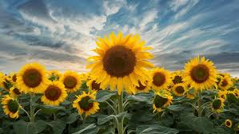

Sunflowers follow the sun: Sunflowers turn to face the sun throughout the day.
Sunflowers come in many colors: Sunflowers can be yellow, orange, red, or purple.
Sunflowers are made up of many tiny flowers: A sunflower head is made up of thousands of smaller flowers, including ray florets and disc florets.
Sunflowers are native to North America: American Indians were the first to domesticate the wild sunflower.
Sunflowers are a food source: Sunflower seeds are a good source of protein, potassium, magnesium, calcium, iron, and vitamin E.
